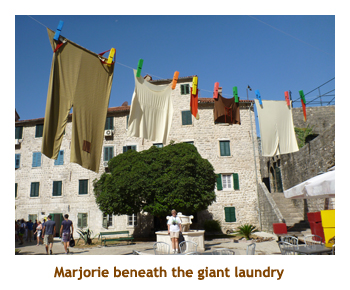
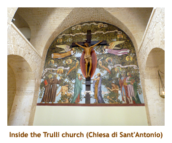
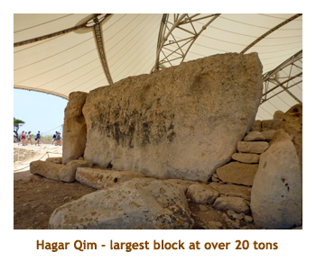

[ Home ] [ Travel ] [ Photography ] [ Pets ] [ Games] [ Rowing] [ Physics ]


Cruising on the Celebrity Silhouette
Travel
Cruises
Past Cruises (Diaries)
Future Cruises
Rogues Galleries
Land Trips
Diaries (Land Trips)
Hawai'i - Big Island - 04'01
Hawai'i - Maui - 05'02
Hawai'i - Big Island - 04'03
Hawai'i - Kaua'i - 09'04
Hawai'i - Big Island - 04'06
Hawai'i - Maui - 04'06
Mainland China - 05'07
Phoenix, Arizona - 12'07
Greek Isles - 05'08
Hawai'i - Kaua'i - 09'08
Hawai'i - Big Island - 09'09
Hawai'i - Maui - 05'12
Hawai'i - Big Island - 04'13
Ireland - 08'13
Mexico - Cancun 11'13
France/Belgium/Lux 07'15
Hawai'i - Big Island - 05'17
England / Wales - 06'17
Hawai'i - Big Island - 09'19
Photography
Cameras
Underwater
Pets
Tara
Blackie
Whitey
Muffy
Ollie
Rusty
Fluffy
Rufus&Dufus
Games
Rowing
Physics
Rating (out of 5): Ship  Food
Food  Service
Itinerary
Service
Itinerary
We chose this cruise despite having just sailed the same area in April. It was mostly new ports, and even the repeated ports were fine as we did different excursions than before. It also tied in nicely with a Rhine River cruise that occured soon after. This time our cruise buddies D&J were not accompanying us.
The price of the cruise dropped dramatically after the final payment date. In the old days we would have been given a refund. However, recently they have been giving cabin upgrades instead. So, we were promoted from a lowly 2C balcony to an A2 Aqua Class balcony. I have addressed our thoughts on Aqua Class at the end of the diary.
I gave the ship less than the full 5 stars only because this fourth ship in the Solstace Class has dropped our favorite glass blowing show, replacing it with a learn-to-BBQ restaurant. Otherwise the ship was wonderful. The ship has a double occupancy capacity of 2880, and we sailed with 2946 passengers. There were lots of families and children on this cruise, but it certainly wasn't a problem. Because our extended trip included several flights, trains, trams and buses, (and dragging of suitcases) we decided to lighten our load by not taking any formal clothes. This meant eating in the buffet for the three formal nights.
Pre-cruise and Day 1 (July 4,5) - Back to Venice
We were picked up by the shuttle at 13:30 and were to the airport by 1:00 PM. We checked in quickly and then had a visit with Christina. Our flight to Amsterdam (KLM) was ontime at 3:30 and we landed in Holland at 8:15 in the morning. We did EU passport control and security, and boarded our 9:55 connector to Venice with little time to spare. We arrived at Marco Polo Airport at 11:45. After gathering our luggage, we caught the city bus to Piazzale Roma and then the "People Mover" to the docking area (Maritimo). Not only did we see the Silhouette, but next to it was the Solstice. Sister ships! We found the building for dropping off our luggage, and then checked onto the ship by 1:00 PM. We grabbed some munchies at the buffet and then waited for our lugage which was delivered about 3:30.
Our first Aqua Class amenity was a bottle of chilled champagne. As Marj and I don't
really like champagne, I asked our room steward if we could get Coke instead.
He said he would find out. After putting away our suitcase contents, we headed
up to dinner at the buffet. We stayed up as long as we could, popped sleeping
pills and went to bed. It was a long day!
Day 2 (July 6) - Another day in Venice
The sleeping pills worked and we slept in to 6:00 AM. We had breakfast in Blu
(the Aqua Class dinning room).
It was very good. Our morning outing was a walk from the ship to San Basilio, where we had docked
while on the Nautica a year ago. We knew there was a Billa grocery store as we had been there before.
It was a very warm walk, the temperature was 33 degrees. It was about an hour walk each way, so it was
lunch time when we returned to the ship with our Coke and beer.
We had never seen the Rialto Market so, after lunch, we headed
off again on another walk. This time we took the people mover to Piazzale Roma and then took the vaparetto
(canal bus) to the Rialto Bridge. We walked about two blocks to the actual market area. It was about 1:30 and
the vendors were packing up. However, we were able to get an idea of the size of the market and what was
being offered (fish, meat, vegetables, flowers, handicrafts).We walked back through the maze of twisting
canals and alleyways, following the sporadic signs to Piazzale Roma. Once again we did the people
mover to the dock. I had time to watch some tennis (Wimbledon) and attend afternoon trivia. We had
dinner in Blu - I had braised shortribs. The menu selection was really quite limited. We always ask
for a table for 6 in the main dining room so that we can meet some new people. However,
Blu wouldn't do this. We were a group of two and so were consigned to a table for two. Rats!
After our nightly wander and read I did the sleeping pill trick for the second night.
Day 3 (July 7) - Ravenna and San Marino
We were up again at 6:00 AM, but I felt really rested. Today I had booked an all day tour to San Marino, while
Marjorie was just going to wander around Ravenna. We had a quick breakfast in the buffet and then I
headed off on the 7:30 tour. It was another hot day, with temperatures in the low 30's. I boarded the bus and we
headed south along the coast to Rimini where we turned inland towards San Marino. It was about a 1.5 hour drive
and we arrived at the mountain top village by 9:30. There is no longer any border control when entering San Marino
so it's not obvious where the border is. We had a one hour guided tour of the old city. We stopped at the town hall,
the old palace (Palazzo Publicco) and the cathedral (Basilica di San Marino). We also saw a park where
crossbow competitions are still held. After the tour had completed, we were given 2.5 hours on our own.
Rather than walk back through the shops and crowds, I decided to walk along the old city walls and visit the
three towers. (The 3 towers are featured on the San Marino Coat of Arms).
The first tower (Guaita Tower) was on the upper edge of the main town, so the pathways were excellent and there were lots of people. The second tower (Cesta Tower), about 15 minutes away was in a more remote area of the town. The pathway there was courser and there were fewer people. The path to the final tower (Montale Tower) was through a wooded area, and was gravel. It was about 20 minutes and I didn't meet another person. Definitely the place to go if you want to get away from the crowds! The first two towers were open to the public (for 5 Euros)and had museums in them. The final tower was much smaller and not open. Walking back from the third tower I did meet several groups of people coming the other way. When I arrived back at the town, I still had almost an hour left so I found a shady park and sat watching the tourists. Finally I hiked down to the bus meeting place for the drive back to Ravenna.
As we approached the city of Ravenna (but still in the country), we stopped at the Basilica of Sant'Apollinare in Classe. This Byzantine church was consecrated in 549, so was a contemporary of the Aghia Sofia in Istanbul. Inside there were beautiful mosaics on the walls and ceiling. What an amazing church!
After about 1/2 hour in the church, we reboarded the bus and continued back to the ship, arriving about 4:15 PM. At the entrance to the dock there was a huge tent complex set up with lots of sales booths inside selling meats, jams and jellies, handicrafts, etc. to the ship passengers. The event was called "Terre di Romagna" (the name of the Italian province where Ravenna is situated). I walked through the tented area and was surprised at the variety of goods for sale. There was even an Italian dixieland band playing American music. Further down the dock beside the ship was a musical group in coloured silk clothes drumming, trumpeting and doing some flag tossing. The festivities ended soon after as we set sail at 5:00 PM. It was formal night, so we ate in the buffet. We skipped the entertainment.
Note: Several of the ports in this itinerary are very close together
- the closest being 49 miles. We generally had about 14 hours between leaving
one port and arriving at the next, so you can imagine how slow the ship
was travelling. Sometimes it seemed like we were almost stopped.
Day 4 (July 8) - Visit to Koper, Slovenia
This was our second time to Koper. The previous time we had done the fabulous Postojnska Caves.
This time we had decided to do the inland tour to Ljubljana - the capital of Slovenia. Today was forecast
to be in the high 30's. I grabbed a yoghurt parfait from the AquaSpa cafe and we headed up to the
buffet for breakfast. Afterwards we went down to the Elite lounge for a smoothie. We watched our
arrival in Koper and then headed out for our 8:45 tour. We got onboard the bus and drove through
the countryside until reaching the capital about 10:30. The tour started at the main town square where
there were three bridges side by side. We did a one hour walking tour of the
beautiful old town area, then were given 1.5 hours on our own to wander around. Being Sunday, the
main cathedral had a service in progress as we passed by. We came back later to see inside the church.
It was very ornate. We had brought
cookies and Coke along with us, so sat in a shady park and snacked instead of finding a restaurant
for lunch. Marjorie was still thirsty as we waited for the bus, so popped into a nearby McDonalds. The
bus got us back to the ship by about 3:00 PM. We showered and then went to afternoon trivia. The
menu for Blu didn't seem that great so we ate in the main dining room. I had a lamb shank which
was so large I could only eat half of it. Rather than do the entertainment we wandered and read
and then hit the sack early.
Day 5 (July 9) - A stop in Split, Croatia
Split was another "second time" port. We had already done a tour of Split and the village of Trogir, so this time we signed up for the bus tour to Krka National Park. We had our usual breakfast as the ship was anchoring just off of Split. This was a tendering port. Our tour met at 8:30 and we headed inland to the park. We arrived at the park about 10:30. The park is about 100 square kilometers encompassing part of the valley that is the course of the Krka River. The valley drops from one end of the park to the other, so the river becomes a course of waterfalls, pools and small lakes. Five kilometers of wooden walkways, steps and bridges take you around the most interesting part of the park. Two of the lakes had swimming beaches and one had a large picnic area. The temperature hit 38 degrees - it was very hot climbing those steps! The area we walked was huge, but there were people everywhere, mostly locals. It must be the main swimming hole for Slovenia. Near where the bus was parked was an open air museum - water mill, blacksmith shop, etc - all manned by employees in period costumes. We had 2 hours on our own to walk the pathways and we were pooped by the end. Too hot!! Nevertheless it was a beautiful sight.
The bus trip back to Split was just over an hour and we arrived back at the ship about 2:15. It was
too hot to wander around the town (and Diocletian's Palace), so we enjoyed the air conditioned ship instead.
We read, did afternoon trivia and attended a lecture on listening to music (given by a clarinet player from
one of the big US symphony orchestras). I should mention that by this time we had a "permanent"
trivia team - Marjorie and me, a fun couple from England who ran a fish & chip restaurant in Ipswich, and
a fellow who was a retired mathemetician. It was actually a progressive trivia and we were neck and neck
with another team right through the cruise. Once again the menu for Blu didn't impress us and we ate in the
main dining room instead. I had roast turkey - yumm! The entertainment was a juggler so I was all excited.
He was very talented but spent most of the time hyping up for a trick rather than just doing it. He also
showed a short movie of his grandfather and father doing juggling stuff which really didn't add to the show.
Bottom line - we didn't care for him. Bedtime.
Day 6 (July 10) - Dubrovnik for the fifth time
Today was either our 5th or 6th time in Dubrovnik. I've lost count. We
had booked a wonderful sounding, all day excursion, that was a ferry ride
to visit the island village of Korkula. However, a couple of days ago
we got a stateroom note that the tour had been cancelled due to a lack
of participants. Boohoo! So, we decided to stay in town, visit the internet
cafe and then take the new cable car ride up to the view point. The cable car
was installed in the previous year and promised excellent views
of the city and surrounding area. We had a leisurely
breakfast in Blu and then hopped on the shuttle to the old town. It was
really hot again with the temperature hitting 35. We did the internet thingy
and then walked to the entrance of the cable car. There was a long
lineup for the ride and there was no shade. We toughed it out for 15 or
20 minutes in the slow moving line and then decided to leave the cable
car ride till another time.
We caught the next shuttle back to the ship in time for lunch. On the dock, where the Shah of Oman had been parked in April, was an interesting smaller ship. The cruise line was Semester at Sea and the ship was called Explorer. According to the Web it is a floating university teaching artsy sort of stuff. We had lunch in the buffet and then played geography trivia. It was quite easy consisting of short well-known phrases containing the name of a country or nationality. Marjorie and I played as our own team and actually won! We read, wandered and then played progressive trivia at 4:00. Afterwards we decided to go back out onto the docking area to check out the other ships. There we saw the Harmony G. This is a small ship (10 cabins or so) that we have run into many times on the Med. It was still very hot out so we didn't last long on the dock, especially when there was an air conditioned ship nearby. Tonight was another formal night so we dined informally at the buffet. Later in the evening we attended a travel lecture on Montengero. The travel lectures were provided throughout the cruise but were a bit disappointing. They really just described the excursions being offered through the ship and didn't do much for the independent tourist.
Speaking of ships, we were watching a large cruise ship coming in
during breakfast and it looked like the Diamond or Sapphire Princess.
When it got closer, we saw that it was the P&O Ventura. Checking the Web,
P&O built two "Grand Class" ships (the other is the Azura) that were the
same size as the Diamond.
Day 7 (July 11) - Lazying in Kotor, Montenegro
We were visiting Kotor for the second time, having done so in earlier April.
There were no other exciting excursions, so we were going to do the town
on our own. In fact, I had decided to have a go at climing up to the castle
above the town. Part way up the hill was a byzantine church that would have
made an alternate goal. However, the forecast was for 35 degrees, so I wasn't
sure if I could do it. We had breakfast in Blu as we anchored in the bay
(the previous time we docked!). Kotor is surrounded by mountains and is
situated at the end of a small fjord. We tendered
in to the town and wandered the narrow streets. We found the entrance to
the trail up the mountain, but, sure enough, the heat was too much for the
climb. There were a number of passengers who did do the climb, but not for
us. We entered the main church (St. Tryphon's) and took some photos of
the beautiful furnishings. Lots of gold!
We noticed a number of outdoor art displays throughout the town, including
a huge set of hanging laundry with huge clothespins. After about an hour
of wandering we tendered back to the ship for lunch at the buffet.

|

After lunch we played geography trivia at 1:00 PM. It was fairly difficult this time as each question
involved showing the silhouette of a country plus an obscure fact about it. The silhouettes
were really tough and included countries such as Liechtenstein, Botswana and Lesotho. Who knows
what shape these countries have? Everyone got a crappy score, but Marjorie and I managed to tie for first.
Afterwards we read for a while and wandered the ship. We did well at afternoon trivia (the progressive one)
and won the round. However, we had no idea how we were doing overall as they never posted the scores.
I think we were first or second as we traded wins with one of the other teams. Once again the main dining
room menu won out over the Blu menu. I had surf and turf. The entertainment was a female pianist (Amy Abler)
who was a fabulous pianist, but was often drowned out by the band. Not all the usic was to our taste, but we
still enjoyed her.
Day 8 (July 12) - Across the Adriatic to Bari
Another new day, another new port. We had never been to this part of Italy
before. Our plan was to take a tour out of Bari to the village of Alberobello.
The forecast for the area was to hit 40 degrees today. Phew! We were up
at 6:00 AM and had breakfast in the buffet (Blu didn't open until 7:30).
The ship was docking as we ate. Then we got ready for our 8:00 AM tour.
It was a nice drive through the countryside and we arrived in Alberobello
at 10:00. The area is noted for it's "Trulli" houses. These houses consist
of cylindrical rooms butted together, each with a stone tiled roof. The
town of Alberobello consisted of two areas - a smaller community of rental homes
(similar to summer homes)
and a larger community of permanent residents.
We walked through a portion of the village of approximately
2,000 homes. We entered one multi-room house. The rooms were very small.
The stone walls kept the rooms cool. Some of the houses had magical (or
pagan) white symbols painted on the roof. Our guided tour ended at a small
church, also built in the Trulli style.
We were given an hour to spend wandering on our own. We wandered through a few streets heading
back to where we were to meet the bus. At the bus stop, we sat in the shade and had our Cokes
and cookies that we had packed. The bus took a different way back to Bari, along the seacoast.
There were lots of crop fields that had small Trulli barns (?). We were back at the ship by 2:30.
We had the option of getting off the bus in Bari and catching a later shuttle bus. However, we
decided to head straight to the ship. We could see Bari another time. We grabbed a snack and
then attended progressive trivia. For dinner in the main dining room I had osso buco. It was very good.
We skipped the entertainment and read our books (e-readers actually).
|  |
Day 9 (July 13) - A rare day at sea
Today was our first (and only) day at sea. No tours today! We were up at 7:00 and had breakfast in Blu.
We have really being enjoying the breakfasts in Blu, but the dinner menu kind of sucks. There is much more
choice in the main dining room for dinner. We did the 10:00 AM trivia. About 11:00 there was an announcement
that we were changing course to search for a ship in distress. According to maritime law, the closest ship is
compelled to go and have a look. We got to where the supposed distress signal had originated
by about noon, but nothing was there (or anywhere to the horizon).
So we adjusted course and continued on our way again. For lunch we had crepes at the "Bistro on 5".
They were excellent. The $5 cover charge is certainly worth it.
We read for a while and then I went to the gym for a row. Then it was time for progressive trivia.
It was formal night again, so we ate in the buffet. We skipped the entertainment and read instead.
Day 10 (July 14) - Our first time in Malta
Malta had been on my bucket list for many years, but somehow we had never gotten there. Today this
would change. We had booked with a full day private tour of the island. The temperature was supposed
to top 40 degrees again. We arrived in Valetta as we were having breakfast in Blu. It was old home
day for the ship as it is registered in Valetta. Our tour was just 4 of us and we boarded the tour van at
8:30. Our first stop was at the Hypogeum of Paola - an excavation of burial chambers dating back
some 5,000 years. The site was right in the city and enclosed in a building. I'm used to sites that
were out in the open. We had purchased our tickets online well before the cruise. A sign at the ticket
desk said it was sold out until August 6. The site was very interesting. After about an hour of a movie followed by a guided
tour of the chambers, we reboarded the van and headed to the Tarxien Temples (started about 3600 BC
- older than Stonehenge). We were given a guided tour of the site as we melted in the heat.
The next item on the itinerary was a drive to the west coast to visit the Hagar Qim
and Mnajdra Temples. These are
a complex of monumental stone structures built about 5,000 years ago.
Both sites had a huge tent over them which provided nice shade from the hot sun.
There was about a half mile path we had to walk between the two sites. Phew!
 |
|||
|  |
Following the archaeological education, we had a drive around the island, stopping a couple of times at cliffs overlooking the ocean, the "blue grotto" and an offshore island. It was just after 2:00 PM when we arrived at the twin cities of Mdina and Rabat. We did a walking tour if Mdina and then had lunch at a restaurant perched high up on the city wall offering a wonderful view of the island. I ordered a chocolate milkshake and, just like in Greece, it was just chocolate milk in a glass. After lunch we drove back to Valetta and stopped at the Upper Barrakka Gardens. There we had an amazing view of the harbour, the ship and the sandstone city of Valetta. Gorgeous! We arrived back at the ship just before 5:00 PM. The ice cold facecloths and blast of air conditioning never felt so good! We ran to trivia (it was at 5:00 today) and just made it in time. For dinner I had prime rib at the main dining room.
Note: The traffic signs, shop signs and spoken language were
strange on Malta - a combination of Latin and Arabic.
Day 11 (July 15) - A warm day in Catania
In April we visited Toarmina and from there we did Mt. Etna. Today's port,
Catania, is also close to Mt. Etna. So we opted for a private tour heading
in the opposite direction - down the coast to Syracusa.
The weather for the day was to be plus 40 again. After breakfast we joined
6 other passengers and boarded a small van bound to Syracusa. The drive
was about 1 hour and was quite interesting. The guide talked about Syracusa
most of the way. Our first stop was at a Greek / Roman site that included
an amphitheatre, a coliseum and some huge caves. We had about an hour to
wander around the site (which was quite huge). Then we drove to the "old
town" area and were given a walking tour of the area. The highlight was
the huge cathedral. Then we were given 3 hours on our own to have lunch
and wander around. The others couldn't decide where or when to eat,
so Marjorie and I left them and found a nice pizza
place for lunch. After lunch we wandered around for a while but it was very
hot. We ended up spending the final half our or so sitting on a bench in
a shaded area overlooking the marina.
When our time was up, we hopped into the air conditioned (!!) van and drove back to Catania. The traffic must have been good or something as we arrived at the ship about a half hour early. So, our guide asked if we wanted a quick tour of Catania, which of course we did. We drove around the city and stopped at a huge plaza and the St. Agatha Cathedral. It was really nice to be able to visit Catania as well. We were back on the ship just in time for 4:00 PM progressive trivia. After trivia we went to join our trivia mates at the Elite members free happy hour. Every afternoon from 5:00 to 7:00 is a "free booze" get together for Elite cruisers (which we are), but we seldom attended. I guess we're just not into booze! We chose dinner in the main dining room again and I had coq au vin.
Note: This was the latest eating group of passengers that we
have ever encountered. We generally showed up in the dining room at 6:00
and asked for a table for 6 to share. We often didn't get our full compliment
of diners until 7:00 or later.
Day 12 (July 16) - Naples and the Island of Capri
This was our fourth visit to Naples, and we still hadn't been to the Island of Capri. It was time
to change this. We signed up for a ship's tour of Capri. Our previous visit in April had been
cool and pouring with rain. This time it was HOT and sunny. We had an early breakfast as we
docked in Naples and then headed off to our 7:30 excursion. We walked from the ship to the
ferry ramp about 100 meters away. We were given tickets for the 8:30 ferry to Capri. The trip
to the island was about one hour. A bus picked us up at the port of Capri and drove us up
the mountain (hill?) through the main town of Capri and on to the lofty village of Anacapri.
The traffic went up the narrow road at breakneck speed, slamming on the brakes to let
opposing traffic by. We really had to hang on to our seats! Motorbikes wove through
the traffic oblivious to any danger. We parked in a small bus lot in the middle of the village. After
a bit of a walking tour through Anacapri,
we were given the choice of a further walk through the town, or a chairlift
up Monte Solaro. We chose the chairlift. The chairs were small - single passenger only.
(154 seats to be exact). The ride was about 15 minutes and provided an
excellent view of the island. Just as we were going up, it clouded over and a cool breeze
came up. It was lovely! At the top there was a cafe / souvenier shop and a large patio with
great views.
We couldn't stay long at the top as we had to ride down again and meet at the bus stop. Back on the bus we headed down the mountain side to the village of Capri. We had another walking tour, but much longer as Capri is larger than Anacapri. Our tour ended up at a beautiful garden overlooking the ocean (Augustus Gardens). We were given a couple of hours on our own for lunch and whatever. We found a pizza shop and we had pizza and beer. Very good! We stopped in to a 5 star hotel (the Quisisana) with a beautiful (and air conditioned) lobby, but a concierge type guy almost immediately threw us out. I guess we looked like vagrants. As our free time expired, we did the funicular down to the port and ferry terminal. After gathering up our clan, we hopped the ferry and arrived back at the ship by 4:30. We were too late for the final 4:00 PM progressive trivia, so we never did hear how we fared for the cruise. My gut feel is that we came second. For dinner (in the main dinng room) I had roast beef and Yorkshire pudding. delicious! The entertainment was the Solstice Class standard of the Cirque-de-Soleil-like arial/acrobatic show. It was excellent.
Late breaking news (August): Our trivia team mates from Ipswich
just emailed us and we did take second place.
Day 13 (July 17) - Debarking in Civitavechia
When we arose this morning we were already docked at Civitavecchia. We had breakfast at the buffet and then headed off the ship at 7:30. We had booked the airport transfer through the ship, so boarded the bus to Fiumicino Airport. It was about 45 minutes drive to the airport. We had lots of time as our flight to Hamburg wasn't until 11:30.
Here endith Part One of our travels. The flight to Hamburg signalled the
beginning of our Rhine
River adventure. Please see the next
trip diary for the continuation of our trip.
A review of Aqua Class
As promised, here is our (hopelessly biased) review of Aqua Class. We normally book a 2C cheapo balcony cabin and have always found them to be perfectly adequate. Due to a large price drop after final payment, Celebrity agreed to upgrade us to an A2 Aqua Class cabin in lieu of any money refunded. The additional cost of an A2 cabin versus a 2C cabin is anywhere from $200 to $500 per cabin. So, what did we get for the money?
First of all, the things that really have meaning for us are the following:
- Reduced price. This is the most desired thing as it saves us $$money$$!
- A larger cabin. Cruise ship cabins are small , so any increase in size is greatly appreciated.
- Free internet. We spend a fair amount of time on the internet, keeping in touch with the folks back home and with Marjorie's TA business.
- Free laundry. Especially useful on ships that don't have public laundromats.
- Free soda and juices. As we don't drink tea or coffee, these items would be very appreciated.
Does Aqua Class get you any of this? No! Not even a larger cabin. In fact, our 2C cabin had a larger balcony than the A2 cabin. So, what do you get? Well you get extra "amenities"' such as:
- Better towels and linens. The regular stuff provided with a 2C cabin is just fine. I'm not sure I would pay extra for fluffier towels.
- Champagne welcome gift. Neither Marjorie nor I like champagne. I talked the room steward into exchanging the champagne for soda and he eventually brought me 6 cans of Coke.
- Daily fruit basket and canapes. Once again we seldom eat anything out of the fruit basket, and I find I don't like most of the canapes. Also, I try not to snack between meals so that I can better enjoy my meals.
- Exclusive use of the Blu restaurant. I must admit we really enjoyed the breakfasts in Blu. The only complaint was that the opening time was fixed at 7:30 AM so for those days with early excursions, Blu wasn't a possibility. They should have opened earlier on early port days. Blu was closed for lunch. Each night at dinner we checked out the menu at Blu and the menu at the main dining room. Without fail the main dining had a selection better to our liking. Also, we always ask for a table for 4 or 6 to share so that we can meet new people. However, Blu would not do this and would only put us at a table for two. This was another reason that we prefered the main dining room.
I guess you get the picture. For Marjorie and I Aqua Class really provided
us nothing. There is no way that we would pay more for these cabins.